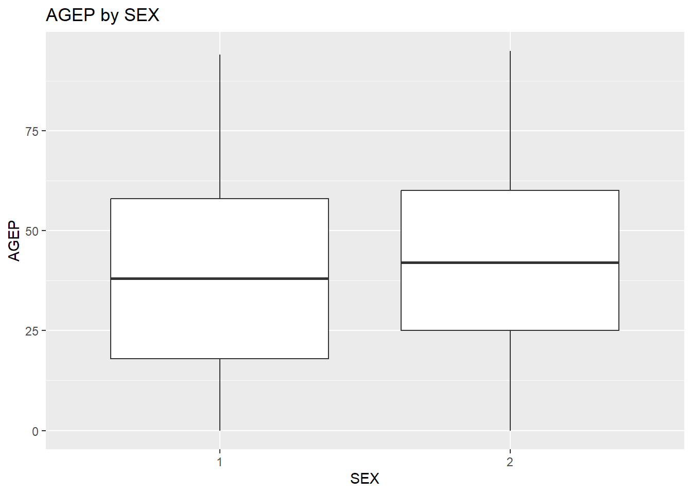

library(httr) Warning: package 'httr' was built under R version 4.5.2library(tidyverse) Warning: package 'tidyverse' was built under R version 4.5.3Warning: package 'ggplot2' was built under R version 4.5.2Warning: package 'tibble' was built under R version 4.5.2Warning: package 'tidyr' was built under R version 4.5.2Warning: package 'readr' was built under R version 4.5.2Warning: package 'purrr' was built under R version 4.5.2Warning: package 'dplyr' was built under R version 4.5.2Warning: package 'stringr' was built under R version 4.5.2Warning: package 'forcats' was built under R version 4.5.2Warning: package 'lubridate' was built under R version 4.5.2── Attaching core tidyverse packages ──────────────────────── tidyverse 2.0.0 ──
✔ dplyr 1.1.4 ✔ readr 2.1.6
✔ forcats 1.0.1 ✔ stringr 1.6.0
✔ ggplot2 4.0.1 ✔ tibble 3.3.0
✔ lubridate 1.9.4 ✔ tidyr 1.3.2
✔ purrr 1.2.0
── Conflicts ────────────────────────────────────────── tidyverse_conflicts() ──
✖ dplyr::filter() masks stats::filter()
✖ dplyr::lag() masks stats::lag()
ℹ Use the conflicted package (<http://conflicted.r-lib.org/>) to force all conflicts to become errors#loading census data from south over years 2018-2022 - this is not needed with the year variable being created below
Census_data <- GET("https://api.census.gov/data/2022/acs/acs5/pums?get=SEX,PWGTP,MAR,SCHL,AGEP,GASP,GRPIP,JWAP,JWDP,JWMNP,FER,HHL,SCH&for=state:01,05,12,13,21,22,28,37,45,47,51&key=1981482f26afb4262ffa0044e22666650ddaa81c")
str(Census_data)List of 10
$ url : chr "https://api.census.gov/data/2022/acs/acs5/pums?get=SEX,PWGTP,MAR,SCHL,AGEP,GASP,GRPIP,JWAP,JWDP,JWMNP,FER,HHL,S"| __truncated__
$ status_code: int 200
$ headers :List of 12
..$ cache-control : chr "max-age=60, must-revalidate"
..$ access-control-allow-origin : chr "*"
..$ access-control-allow-methods: chr "GET"
..$ access-control-allow-headers: chr "Origin, X-Requested-With, Content-Type, Accept"
..$ referrer-policy : chr "same-origin"
..$ content-security-policy : chr "default-src 'self'; img-src 'self' data:; object-src 'none'; script-src 'self' 'unsafe-inline'; style-src 'self"| __truncated__
..$ x-content-type-options : chr "nosniff"
..$ content-type : chr "application/json;charset=utf-8"
..$ date : chr "Fri, 19 Jun 2026 18:03:32 GMT"
..$ strict-transport-security : chr "max-age=31536000"
..$ set-cookie : chr "TS010383f0=01283c52a436a57aac68966ca279f761ed9f5c8d7d4a103972b491fc62196460f7c0f0b1880379a940247cd74d709e8286b7"| __truncated__
..$ transfer-encoding : chr "chunked"
..- attr(*, "class")= chr [1:2] "insensitive" "list"
$ all_headers:List of 1
..$ :List of 3
.. ..$ status : int 200
.. ..$ version: chr "HTTP/1.1"
.. ..$ headers:List of 12
.. .. ..$ cache-control : chr "max-age=60, must-revalidate"
.. .. ..$ access-control-allow-origin : chr "*"
.. .. ..$ access-control-allow-methods: chr "GET"
.. .. ..$ access-control-allow-headers: chr "Origin, X-Requested-With, Content-Type, Accept"
.. .. ..$ referrer-policy : chr "same-origin"
.. .. ..$ content-security-policy : chr "default-src 'self'; img-src 'self' data:; object-src 'none'; script-src 'self' 'unsafe-inline'; style-src 'self"| __truncated__
.. .. ..$ x-content-type-options : chr "nosniff"
.. .. ..$ content-type : chr "application/json;charset=utf-8"
.. .. ..$ date : chr "Fri, 19 Jun 2026 18:03:32 GMT"
.. .. ..$ strict-transport-security : chr "max-age=31536000"
.. .. ..$ set-cookie : chr "TS010383f0=01283c52a436a57aac68966ca279f761ed9f5c8d7d4a103972b491fc62196460f7c0f0b1880379a940247cd74d709e8286b7"| __truncated__
.. .. ..$ transfer-encoding : chr "chunked"
.. .. ..- attr(*, "class")= chr [1:2] "insensitive" "list"
$ cookies :'data.frame': 1 obs. of 7 variables:
..$ domain : chr "#HttpOnly_.api.census.gov"
..$ flag : logi TRUE
..$ path : chr "/"
..$ secure : logi TRUE
..$ expiration: POSIXct[1:1], format: "Inf"
..$ name : chr "TS010383f0"
..$ value : chr "01283c52a436a57aac68966ca279f761ed9f5c8d7d4a103972b491fc62196460f7c0f0b1880379a940247cd74d709e8286b7bd6c44"
$ content : raw [1:249619452] 5b 5b 22 53 ...
$ date : POSIXct[1:1], format: "2026-06-19 18:03:32"
$ times : Named num [1:6] 0 0.0517 0.094 0.1944 35.08 ...
..- attr(*, "names")= chr [1:6] "redirect" "namelookup" "connect" "pretransfer" ...
$ request :List of 7
..$ method : chr "GET"
..$ url : chr "https://api.census.gov/data/2022/acs/acs5/pums?get=SEX,PWGTP,MAR,SCHL,AGEP,GASP,GRPIP,JWAP,JWDP,JWMNP,FER,HHL,S"| __truncated__
..$ headers : Named chr "application/json, text/xml, application/xml, */*"
.. ..- attr(*, "names")= chr "Accept"
..$ fields : NULL
..$ options :List of 2
.. ..$ useragent: chr "libcurl/8.14.1 r-curl/7.0.0 httr/1.4.7"
.. ..$ httpget : logi TRUE
..$ auth_token: NULL
..$ output : list()
.. ..- attr(*, "class")= chr [1:2] "write_memory" "write_function"
..- attr(*, "class")= chr "request"
$ handle :Class 'curl_handle' <externalptr>
- attr(*, "class")= chr "response"#creating year variable
get_census_data <- function(year = 2022) {
site <- paste0("https://api.census.gov/data/", year,
"/acs/acs5/pums?get=SEX,PWGTP,MAR,SCHL,AGEP,GASP,GRPIP,JWAP,JWDP,JWMNP,FER,HHL,SCH&for=state:01,05,12,13,21,22,28,37,45,47,51&key=1981482f26afb4262ffa0044e22666650ddaa81c")
GET(site)
}
Census_data <-get_census_data()
# checks but don't run
#content(Census_data, "text")
#cat(rawToChar(Census_data$content))
#bringing in the jsonlite package to parse
library(jsonlite) Warning: package 'jsonlite' was built under R version 4.5.2
Attaching package: 'jsonlite'
The following object is masked from 'package:purrr':
flattenparsed <- fromJSON(rawToChar(Census_data$content))
str(parsed) chr [1:3868712, 1:14] "SEX" "1" "1" "2" "1" "1" "2" "1" "2" "2" "2" "2" ...Name_census <- as_tibble(parsed[-1, ], .name_repair = "minimal")
colnames(Name_census) <- parsed[1, ]
Name_census <- Name_census %>%
mutate(across(everything(), as.numeric)) %>%
mutate(across(c(FER, HHL, SCH, SCHL, SEX), as.factor))
#creating class variable in tibble
class(Name_census) <- c("census", class(Name_census))
#checking the name census tibble
Name_census# A tibble: 3,868,711 × 14
SEX PWGTP MAR SCHL AGEP GASP GRPIP JWAP JWDP JWMNP FER HHL SCH
<fct> <dbl> <dbl> <fct> <dbl> <dbl> <dbl> <dbl> <dbl> <dbl> <fct> <fct> <fct>
1 1 2 1 16 64 3 0 0 0 0 0 0 1
2 1 17 5 11 19 3 0 0 0 0 0 0 1
3 2 19 2 21 84 3 0 0 0 0 0 0 1
4 1 13 5 13 51 3 0 0 0 0 0 0 1
5 1 4 5 5 72 3 0 0 0 0 0 0 1
6 2 9 3 18 54 3 0 92 49 20 0 0 1
7 1 17 1 16 71 3 0 0 0 0 0 0 1
8 2 17 3 16 56 3 0 0 0 0 0 0 1
9 2 16 5 20 23 3 0 162 100 10 2 0 3
10 2 17 5 19 19 3 0 84 43 10 2 0 2
# ℹ 3,868,701 more rows
# ℹ 1 more variable: state <dbl>Name_census_Sub <- Name_census %>%
mutate(across(everything(), as.numeric)) %>%
mutate(across(c(FER, HHL, SCH, SCHL, SEX), as.factor)) %>%
mutate(year = 2022) |>
mutate(JWAP = (JWAP - 1) * 5 + 2.5) %>%
mutate(JWDP = (JWDP - 1) * 5 + 2.5) %>%
filter(FER == 1)%>%
select(PWGTP, AGEP)
Name_census_Sub# A tibble: 3,061,424 × 2
PWGTP AGEP
<dbl> <dbl>
1 2 64
2 17 19
3 19 84
4 13 51
5 4 72
6 9 54
7 17 71
8 17 56
9 15 86
10 8 51
# ℹ 3,061,414 more rows#code to pull by year
#data_2018 <- get_census_data(2018)
#data_2019 <- get_census_data(2019)
#data_2021 <- get_census_data(2021)
#data_2022 <- get_census_data(2022)
summary.census <- function(x,
numeric_vars = c("AGEP", "GASP", "GRPIP", "JWAP", "JWDP", "JWMNP"),
cat_vars = c("FER", "HHL", "SCH", "SCHL", "SEX")) {
cat("AGEP - mean:", mean(x$AGEP, na.rm = TRUE), " sd:", sd(x$AGEP, na.rm = TRUE), "\n")
cat("GASP - mean:", mean(x$GASP, na.rm = TRUE), " sd:", sd(x$GASP, na.rm = TRUE), "\n")
cat("GRPIP - mean:", mean(x$GRPIP, na.rm = TRUE), " sd:", sd(x$GRPIP, na.rm = TRUE), "\n")
cat("JWAP - mean:", mean(x$JWAP, na.rm = TRUE), " sd:", sd(x$JWAP, na.rm = TRUE), "\n")
cat("JWDP - mean:", mean(x$JWDP, na.rm = TRUE), " sd:", sd(x$JWDP, na.rm = TRUE), "\n")
cat("JWMNP - mean:", mean(x$JWMNP, na.rm = TRUE), " sd:", sd(x$JWMNP, na.rm = TRUE), "\n")
cat("\nFER counts:\n")
print(table(x$FER))
cat("\nHHL counts:\n")
print(table(x$HHL))
cat("\nSCH counts:\n")
print(table(x$SCH))
cat("\nSCHL counts:\n")
print(table(x$SCHL))
cat("\nSEX counts:\n")
print(table(x$SEX))
}
summary(Name_census)AGEP - mean: 43.2192 sd: 23.90767
GASP - mean: 35.52237 sd: 81.47437
GRPIP - mean: 8.056591 sd: 19.62689
JWAP - mean: 39.74179 sd: 56.06321
JWDP - mean: 20.90927 sd: 31.60233
JWMNP - mean: 10.27876 sd: 19.0616
FER counts:
0 1 2
3061424 39643 767644
HHL counts:
0 1 2 3 4 5
212538 3018331 378341 140070 85996 33435
SCH counts:
0 1 2 3
103353 2932702 667292 165364
SCHL counts:
0 1 2 3 4 5 6 7 8 9 10
103353 112334 50614 42342 39118 41760 44707 44117 48628 57723 54531
11 12 13 14 15 16 17 18 19 20 21
77130 84308 97235 103769 63647 744756 153677 231808 446324 265958 584616
22 23 24
265069 66868 44319
SEX counts:
1 2
1880943 1987768 #using if logic and weighted means calculation
summary.census <- function(x,
numeric_vars = c("AGEP", "GASP", "GRPIP"),
cat_vars = c("FER", "HHL", "SCH", "SCHL", "SEX")) {
results <- list()
weight <- x$PWGTP
# AGEP
if ("AGEP" %in% numeric_vars) {
m <- sum(x$AGEP * weight, na.rm = TRUE) / sum(weight, na.rm = TRUE)
s <- sqrt(sum(x$AGEP^2 * weight, na.rm = TRUE) / sum(weight, na.rm = TRUE) - m^2)
results$AGEP_mean <- m
results$AGEP_sd <- s
}
# GASP
if ("GASP" %in% numeric_vars) {
m <- sum(x$GASP * weight, na.rm = TRUE) / sum(weight, na.rm = TRUE)
s <- sqrt(sum(x$GASP^2 * weight, na.rm = TRUE) / sum(weight, na.rm = TRUE) - m^2)
results$GASP_mean <- m
results$GASP_sd <- s
}
# GRPIP
if ("GRPIP" %in% numeric_vars) {
m <- sum(x$GRPIP * weight, na.rm = TRUE) / sum(weight, na.rm = TRUE)
s <- sqrt(sum(x$GRPIP^2 * weight, na.rm = TRUE) / sum(weight, na.rm = TRUE) - m^2)
results$GRPIP_mean <- m
results$GRPIP_sd <- s
}
# JWMNP (numeric, not a time-of-day variable, so this one IS summarized)
if ("JWMNP" %in% numeric_vars) {
m <- sum(x$JWMNP * weight, na.rm = TRUE) / sum(weight, na.rm = TRUE)
s <- sqrt(sum(x$JWMNP^2 * weight, na.rm = TRUE) / sum(weight, na.rm = TRUE) - m^2)
results$JWMNP_mean <- m
results$JWMNP_sd <- s
}
# FER counts
if ("FER" %in% cat_vars) {
results$FER_counts <- table(x$FER)
}
# HHL counts
if ("HHL" %in% cat_vars) {
results$HHL_counts <- table(x$HHL)
}
# SCH counts
if ("SCH" %in% cat_vars) {
results$SCH_counts <- table(x$SCH)
}
# SCHL counts
if ("SCHL" %in% cat_vars) {
results$SCHL_counts <- table(x$SCHL)
}
# SEX counts
if ("SEX" %in% cat_vars) {
results$SEX_counts <- table(x$SEX)
}
results
}
out <- summary(Name_census)
out$AGEP_mean
[1] 39.75138
$AGEP_sd
[1] 23.3662
$GASP_mean
[1] 33.51317
$GASP_sd
[1] 76.84493
$GRPIP_mean
[1] 10.4803
$GRPIP_sd
[1] 21.85659
$FER_counts
0 1 2
3061424 39643 767644
$HHL_counts
0 1 2 3 4 5
212538 3018331 378341 140070 85996 33435
$SCH_counts
0 1 2 3
103353 2932702 667292 165364
$SCHL_counts
0 1 2 3 4 5 6 7 8 9 10
103353 112334 50614 42342 39118 41760 44707 44117 48628 57723 54531
11 12 13 14 15 16 17 18 19 20 21
77130 84308 97235 103769 63647 744756 153677 231808 446324 265958 584616
22 23 24
265069 66868 44319
$SEX_counts
1 2
1880943 1987768 plot.census <-function(x, numeric_var, cat_var) {
ggplot(x, aes(x = .data[[cat_var]], y = .data[[numeric_var]], weight = PWGTP)) +
geom_boxplot() +
labs(x = cat_var, y = numeric_var,
title = paste(numeric_var, "by", cat_var))
}
#plot(Name_census, numeric_var = "AGEP", cat_var = "SEX")
test_data <- Name_census %>% sample_n(500)
class(test_data) <- c("census", class(test_data))
plot(test_data, numeric_var = "AGEP", cat_var = "SEX")
class(Name_census$SEX)[1] "factor"summary(Name_census$AGEP) Min. 1st Qu. Median Mean 3rd Qu. Max.
0.00 22.00 45.00 43.22 63.00 95.00 sort(unique(Name_census$AGEP), decreasing = TRUE)[1:20] [1] 95 94 93 92 91 90 89 88 87 86 85 84 83 82 81 80 79 78 77 76